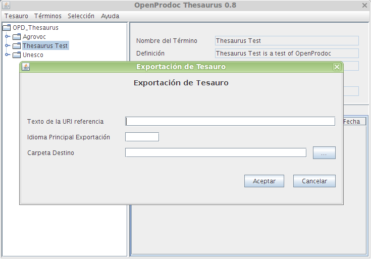

Exportar Tesauros
Cuando se desee exportar un tesauro completo, debe utilizarse la opción Tesauros->Exportar
La opción Exportar exporta el tesauro actual y crea en el sistema de archivos un fichero con el formato estandarSKOS. Antes de iniciar la exportación, OPD presentará una pantalla donde definir distintas características de la exportación. Las opciones posibles y sus efectos son:
- Texto URI: Indica el texto que se incluirá en el formato skos como referencia del tesauro.Ej.: si se introduce 'www.Mi_Institucion.com' se generará unas referencias SKOS a los elementos: '<skos:ConceptScheme rdf:about="http://www.Mi_Institucion.com/20" >' o '<skos:Concept rdf:about="http://www.Mi_Institucion.com/13bbf2478b9-3fe2d9c0c4896b3e" >' siendo 20 el número de tesauro o 13bbf2478b9-3fe2d9c0c4896b3e el número de un término
- Idioma Principal: El idioma elegido se utilizará como idioma por defecto en la exportación. Esto implica que se recorrerá el árbol de términos utilizando este idioma. Si la estructura en cada idioma es idéntica, no afectaría a la exportación el idioma elegido, pero si es diferente (ej. los términos específicos en un idioma son diferentes a los de otro idioma) la forma de recorrer el árbol de términos variará.
- La carpeta destino Indica la carpeta del sistema de archivos donde se almacenará el tesauro en formato SKOS.

La Exportación generará un fichero en la carpeta de sistema indicada con el nombre "NúmeroTesauro.rdf.xml". Si se produce un error se presentará un mensaje con el motivo del error.
Debe tenerse en cuenta que la forma de interpretar el formato SKOS es ligeramente variable (Implementaciones, Codificaciones ), por lo que no puede asegurarse que el intercambio de tesauros con otros sistemas distintos de OpenProdoc pueda ser completo.
Índice Ayuda Tesauros